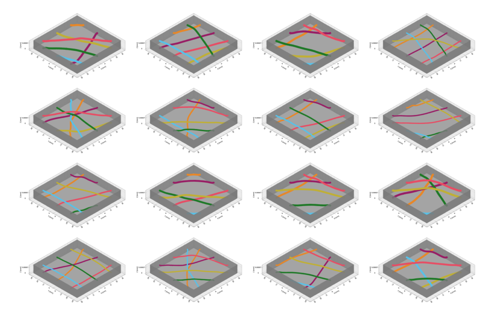

Gilbert Chang
chang940 [at] purdue [dot] edu
I'm a senior at Purdue University, majoring in mechanical engineering and computer science, with a concentration in computational science and engineering.
Previously, I've worked on mechanical design for robot hands at Persona AI, as well as electromechanical testing at 1X Technologies. Some of my work is featured here.
I have also spent time working on bioinspired robotics at the Hyun Group, and thermal modeling at Herrick Laboratories. I currently research computational design and simulation for robots at the Computational Motion, Manipulation, and Autonomy (CoMMA) Lab, advised by Zachary Kingston.
Research
* Equal contribution